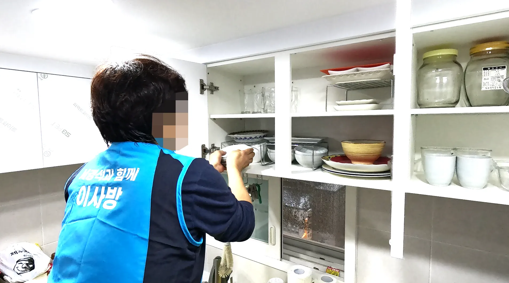
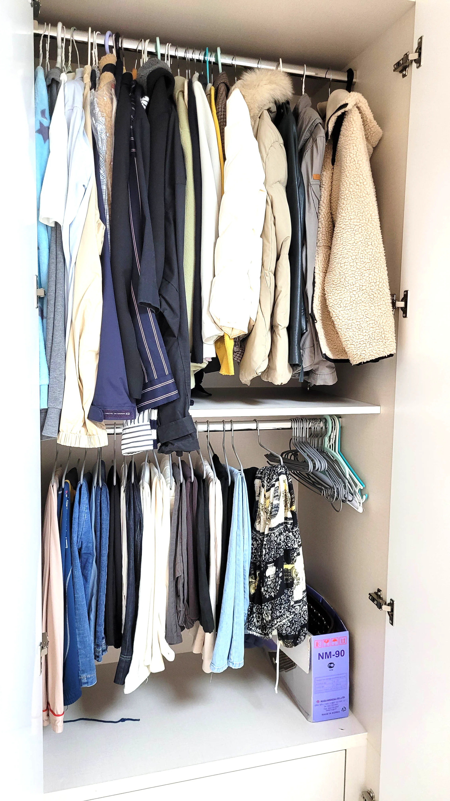

비산동포장이사
비산동 포장이사비용 알아보기 후기 추천비산동포장이사얼마 전에 우리 집을 이사하면서 처음으로 이삿짐센터를 이용했는데요, 준비하면서 느낀 점과 꿀팁을 공유하려고 해요. 혹시 지금 이사 준비 중이시라면 참고하시면 좋을 것 같아요. 저는 원래 포장이사도 고민했지만, 예산과 짐 양을 고려해서 이삿짐센터를 선택했어요. 사실 처음엔 어떤 업체를 선택해야 할지 막막했는데, 무료 견적 비교 서비스를 활용하니 한눈에 가격과 서비스 조건을 비교할 수 있어서 정말 편하더라고요. 이삿짐센터 선택에서 가장 중요한 건 신뢰도와 후기예요. 주변 추천도 중요하지만, 온라인 리뷰와 블로그 후기도 꼼꼼히 확인했습니다. 그리고 깨지기 쉬운 그릇이나 전자제품이 많아서, 포장 서비스를 제공하는지 꼭 확인했어요. 다행히 우리 센터는 전문 포장 팀이 있어서 안전하게 운송할 수 있었습니다. 이사 당일에는 아이들과 함께 정신없이 움직이다 보니, 작업 진행 상황 체크를 자주 못 하겠더라고요. 그래서 미리 센터 직원과 소통하면서, “이거 깨지지 않게 조심해주세요” 같은 세부 요청을 남기는 게 좋습니다. 작은 준비만으로도 마음이 한결 편해집니다. 마지막으로, 이삿짐센터를 이용하면서 느낀 건 계획과 비교가 가장 중요하다는 것! 무료 견적 비교 서비스를 적극 활용하고, 미리 필요한 정보와 준비물을 정리하면 훨씬 수월하게 이사를 마칠 수 있어요. 우리 집처럼 아이가 있거나 짐이 많다면, 꼭 참고하시길 바랍니다.
이삿짐센터를 고를 때는 비용과 서비스 비교가 필수입니다. 저는 무료 견적 비교 사이트를 통해 몇 개 업체의 가격과 서비스를 확인했는데, 이 과정을 거치니 시간과 비용 모두 절약할 수 있었어요. 포장이 필요한 물품은 미리 분류하고, 깨지기 쉬운 물건은 표시를 해두었습니다. 전문 포장팀이 있어서 큰 걱정 없이 맡길 수 있었고, 운송 중에도 안전하게 도착했습니다. 개인적으로는 포장이사 서비스를 이용하면 시간과 체력을 확실히 절약할 수 있다는 점을 체감했어요. 이사 당일에는 센터 직원과 소통하면서 진행 상황을 체크하는 것이 중요합니다. 작은 요청 사항이라도 미리 전달하면 문제 발생 확률을 크게 줄일 수 있습니다. 결론적으로, 직장인 입장에서 이삿짐센터를 잘 비교하고, 습니다.준비 과정을 철저히 하는 것이 안전하고 효율적인 이사의 핵심입니다. 바쁜 일정 속에서도 스마트하게 이사하고 싶다면, 이 방법을 추천합니다.
비산동 포장이사비용 알아보기 후기 추천

아이들과 함께 이사할 때는 안전과 편리함이 가장 중요하더라고요. 그래서 이삿짐센터 무료견적과 비교견적을 활용해서 신뢰할 수 있는 업체를 찾았습니다. 업체마다 서비스 범위가 달라서, 포장 가능 여부와 운송 안전 장치까지 꼼꼼히 확인했어요. 이삿짐센터를 이용하면서 가장 좋았던 점은 전문 포장팀이 있다는 것! 깨지기 쉬운 식기, 아이 장난감, 전자제품까지 안전하게 포장해 주어서 걱정이 훨씬 줄었습니다. 또한, 이사 당일에는 작업 진행 상황 확인과 특별 관리가 필요한 물품 체크를 통해 사고를 예방할 수 있었어요. 또한, 이삿짐센터를 이용하면 시간과 체력도 절약됩니다. 가족 모두가 참여할 필요 없이 전문 팀이 포장, 운송, 정리까지 책임져 주니, 이사 당일에 느껴지는 스트레스가 훨씬 줄더라고요. 마지막으로, 가족 이사에서는 계획과 준비가 핵심입니다. 미리 업체를 비교하고, 무료 견적을 활용하며,이사 준비 단계에서는 무료 견적 비교가 큰 도움이 됐습니다. 여러 업체를 비교해 가격과 장비, 인력 상황을 확인하고, 저희 집 구조에 맞는 업체를 선택할 수 있었거든요. 덕분에 불필요한 비용을 줄이고, 안전하게 이사할 수 있었습니다. 또한 사다리차 이사는 전문 인력이 직접 설치와 작업을 진행하기 때문에 안전성도 높았습부 사항을 체크하면 안전하고 효율적인 이사를 경험할 수 있습니다. 우리 가족처럼 아이가 있거나 짐이 많은 집이라면 꼭 참고하세요.
🚛100% 무료견적 알아보기🚛 
비산동 포장이사비용 알아보기 후기 추천아이들과 함께 이사할 때는 안전과 편리함이 가장 중요하더라고요. 그래서 이삿짐센터 무료견적과 비교견적을 활용해서 신뢰할 수 있는 업체를 찾았습니다. 업체마다 서비스 범위가 달라서, 포장 가능 여부와 운송 안전 장치까지 꼼꼼히 확인했어요. 이삿짐센터를 이용하면서 가장 좋았던 점은 전문 포장팀이 있다는 것! 깨지기 쉬운 식기, 아이 장난감, 전자제품까지 안전하게 포장해 주어서 걱정이 훨씬 줄었습니다. 또한, 이사 당일에는 작업 진행 상황 확인과 특별 관리가 필요한 물품 체크를 통해 사고를 예방할 수 있었어요. 또한, 이삿짐센터를 이용하면 시간과 체력도 절약됩니다. 가족 모두가 참여할 필요 없이 전문 팀이 포장, 운송, 정리까지 책임져 주니, 이사 당일에 느껴지는 스트레스가 훨씬 줄더라고요. 마지막으로, 가족 이사에서는 계획과 준비가 핵심입니다. 미리 업체를 비교하고, 무료 견적을 활용하며,이사 준비 단계에서는 무료 견적 비교가 큰 도움이 됐습니다. 여러 업체를 비교해 가격과 장비, 인력 상황을 확인하고, 저희 집 구조에 맞는 업체를 선택할 수 있었거든요. 덕분에 불필요한 비용을 줄이고, 안전하게 이사할 수 있었습니다. 또한 사다리차 이사는 전문 인력이 직접 설치와 작업을 진행하기 때문에 안전성도 높았습부 사항을 체크하면 안전하고 효율적인 이사를 경험할 수 있습니다. 우리 가족처럼 아이가 있거나 짐이 많은 집이라면 꼭 참고하세요.
포장이사 무료견적 서비스
| 비산동포장이사 | 비산동이사업체 | 비산동이삿짐센터 |
|---|---|---|
| 비산동포장이사 | 포장이사비교견적 | 이사무료견적 |
| 비산동이사업체 | 이삿짐센터 | 포장이사업체비교 |
| 비산동이삿짐센터 | 포장이사가격 | 이사업체추천 |
FAQ
전국 어디든 100% 무료 비교견적 가능합니다.
포장이사는 전문 팀이 짐 포장부터 운송, 정리까지 전 과정을 책임지는 서비스입니다. 일반 이사는 운송만 제공하는 경우가 많아, 포장과 정리를 직접 해야 하므로 체력과 시간이 많이 필요합니다. 포장이사를 이용하면 시간과 비용을 절약하면서 안전하게 이사를 진행할 수 있습니다.